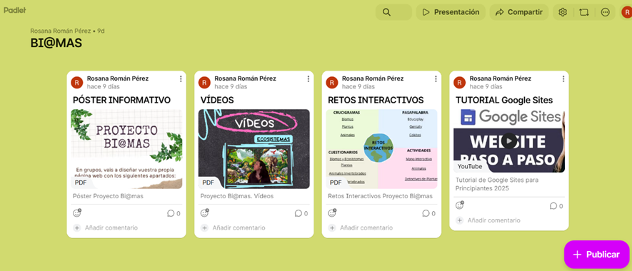

En este enlace de Padlet, encontraréis los recursos necesarios para realizar el proyecto. Están organizados en forma de pósteres con información del trabajo, vídeos, retos interactivos y tutorial de Google Sites.
Padlet es una plataforma digital que funciona como un muro o tablero colaborativo en línea. Permite publicar, organizar y compartir diversos contenidos multimedia (textos, imágenes, vídeos, documentos, enlaces) en tiempo real, por lo que os puede ayudar en la realización de vuestro proyecto.
https://padlet.com/rromper678/bi-at-mas-c4m6jk0g6r3o2yix
